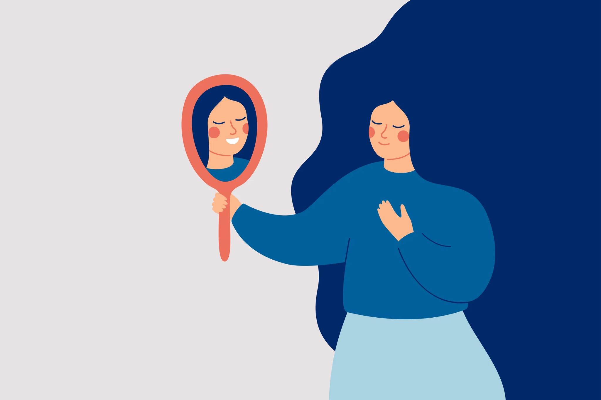

{kind=link}

By: Jamaica Balisalisa & Cassandra Sonido

The issue of negative body image and the low self-esteem that comes with it is such a large problem that our society struggles with today, and we want that to change!
The Teen Self-Esteem Code, our website, aims to find ways and help teens to recognize and appreciate their body image; to build their self-esteem in our society today. We want people to celebrate and accept the beauty of their body, to find self-worth. We want to help teens find their value as a person, and to finally see how beautiful and unique one is in their own way— a way that no one can ever replicate.
 Our advocacy initiative was launched to concentrate more on the problem of low self-esteem and poor body image in today's generation. How to change people's perspectives of themselves from within. We, Jamaica Balisalisa, Maria Dowling, Kate Malcon, Clovis Licong, and Cassandra Sondo want to help more people understand and appreciate their body image and make them feel valuable and precious so that we can build a healthier society from which everyone benefits.
Our advocacy initiative was launched to concentrate more on the problem of low self-esteem and poor body image in today's generation. How to change people's perspectives of themselves from within. We, Jamaica Balisalisa, Maria Dowling, Kate Malcon, Clovis Licong, and Cassandra Sondo want to help more people understand and appreciate their body image and make them feel valuable and precious so that we can build a healthier society from which everyone benefits.
This focuses on improving social views toward their self-esteem and body image since these issues have really gotten worse due to the influence of various social media platforms, many teens often comparing themselves to what they see and wanting to change themselves just to fit the standards. Building self-worth and self-esteem is the goal of our advocacy because we believe that everyone is special in their own way! We aim to undoubtedly help lessen the issues of low self-esteem and negative body image, influencing others to have a happier and more self-assured outlook on life.
Our vision is that this website and advocacy will allow us to assist and help many people in developing a positive attitude towards their physical appearance and sense of worth; to help people change their mindsets and see the true beauty that they possess. To make the world a better place; we aim to influence teens and help each other get through this, step by step.
Our mission is to raise awareness of self positivity through the use of various platforms, such as our website. We help people by giving step-by-step advice and encouragement, getting through it together. To be able to help in shifting perspectives and see themselves in a more positive light. This website aims to offers support with these issues through a lot of activities (ex. counseling, journaling, and many more). We want to help you get through it in every step of the way, together.